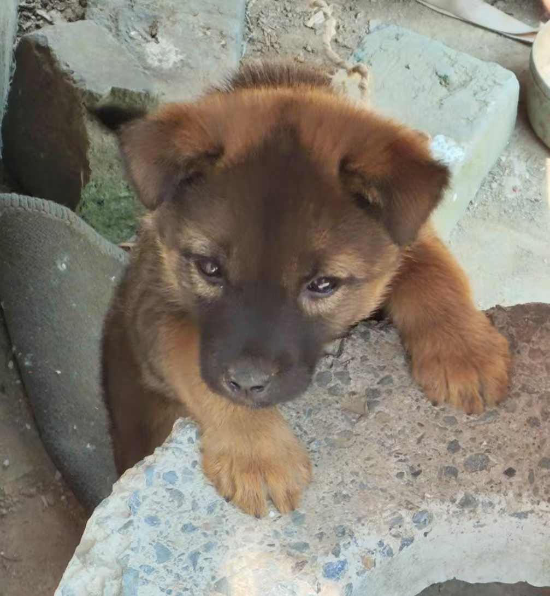

信息安全技术探索
喜欢研究各类信息安全相关的技术博客、论坛，尝试复现漏洞利用案例，在这个过程中不断提升自己的技术认知，也会参与一些线上的安全技术交流社群，和大家一起探讨问题、分享经验。
[其他爱好，运动：乒乓]
热爱乒乓球运动，乒乓球是一项充满魅力的运动，小小的银球在球台上来回穿梭，仿佛灵动的精灵。每当握着球拍，全神贯注地迎接每一次来球，身体随着节奏快速移动，挥拍瞬间爆发的力量与精准的落点控制，都让人沉浸在酣畅淋漓的快感中。 无论是与对手激烈交锋时的紧张刺激，还是独自练习时的专注思考，乒乓球都能让人忘却烦恼，享受运动带来的纯粹快乐，它不仅锻炼了身体的协调性和反应力，更在一次次击球中磨砺着耐心与毅力，成为生活中不可或缺的热爱。

[另一个爱好，小狗]
小狗是坠入人间的毛绒精灵，总能以最纯粹的热情点亮平凡日常。清晨被湿漉漉的鼻尖轻轻拱醒，傍晚迎来摇成螺旋桨的尾巴，它们用不会说谎的眼神诉说依赖，用蹦跳的步伐传递快乐。 无论是蜷缩在脚边打盹的软糯模样，还是叼着玩具邀你玩耍的热切期待，都让人心头泛起温柔涟漪。和小狗相伴的时光，藏着治愈一切的魔法，它们教会我无条件的爱，也让每个平凡日子都闪着毛茸茸的光。
